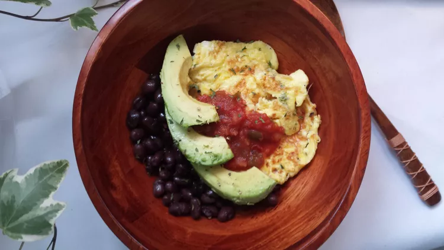

Black Bean Breakfast Bowl
Home

Description
This black bean breakfast bowl is a quick breakfast if you're trying to avoid carbs.
Ingredients
- 2 tablespoons olive oil
- 4 eggs, beaten
- 1 (15 ounce) can black beans, drained and rinsed
- 1 avocado, peeled and sliced
- ¼ cup salsa
- salt and ground black pepper to taste
Steps
- Heat olive oil in a small skillet over medium heat.
Pour eggs into skillet; cook and stir eggs until set, 3 to 5 minutes.
- Place black beans in a microwave-safe bowl.
Microwave at High power until warm, about 1 minute.
Divide between two bowls.
- Divide scrambled eggs between each bowl;
top each with avocado and salsa, then season with salt and black pepper.